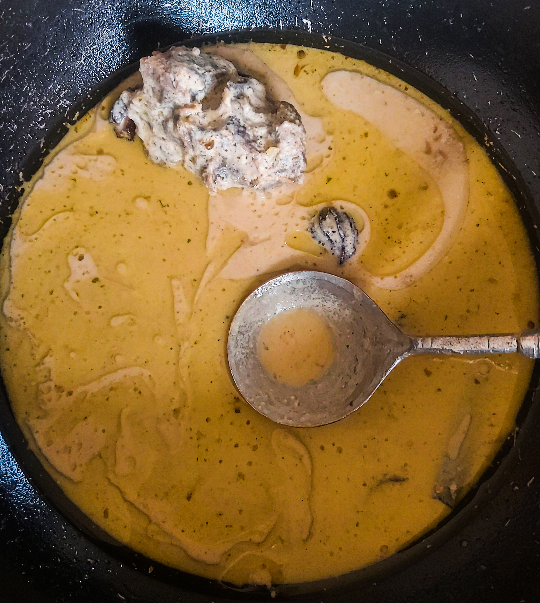

Yakhaen Recipe: A Kashmiri dish.

This image displays the final look of Yakhaen a traditional Kashmiri dish, if you follow it closely.
Ingredients Needed:
- Mutton: 1/2 Kg.
- Curd / Yogurt 1 kg
- Mustard oil 4 tbsp
- Bay leaf 2
- Cinnamon stick 1inch piece
- Cardamom green 5-6
- Fennel powder 1/2 teaspoon
- Salt to taste
- Ginger-garlic paste 1 teaspoon
- Coriander leaves for garnish
- Cumin powder 1/2 teaspoon
Steps to follow:
- Clean and wash the mutton properly. Take the mutton, salt and 1 cup of water in a pressure cooker and pressure cook it on a high flame for one whistle, then keep the flame low and cook for another 15-20 minutes or till the mutton is properly cooked. Switch off the flame.
- Take the curd in a bowl and add fennel powder and cumin powder, Mix it well till the curd is creamy in texture.
- Heat the oil in a wok and temper with the cinnamon stick, bay leaf and cardamom green. Saute for a few seconds, then add ginger-garlic paste. Cook for another 1-2 minutes till the raw smell gone from the paste.
- Add the beaten curd in the wok and cook it on high flame with continuous stirring with spatula for 7-8 minutes.
- Add mutton stock ( the leftover water after boiling the mutton in step 1) and mutton pieces in the wok.
- Cook covered on a medium flame till the gravy is thick, garnish with chopped coriander leaves. Delicious mutton Yakhni is ready to serve, serve hot with chapatti and rice.
- Enjoy!!
Main